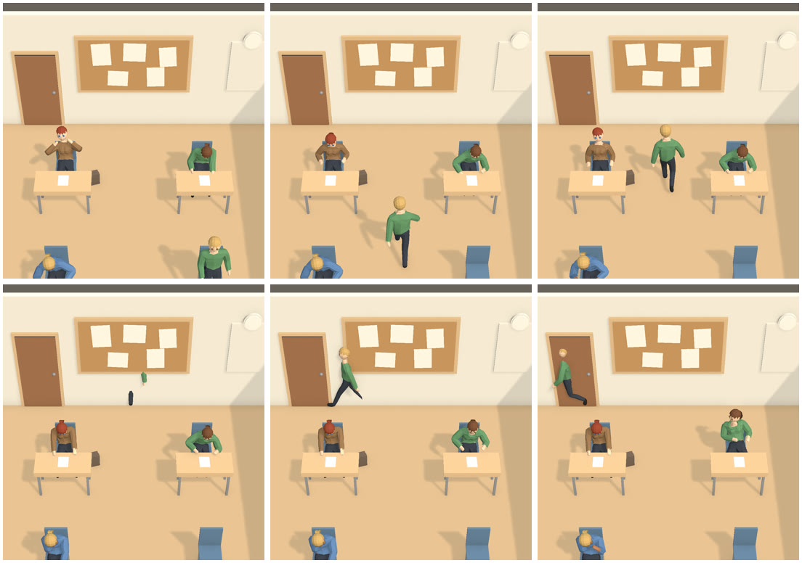
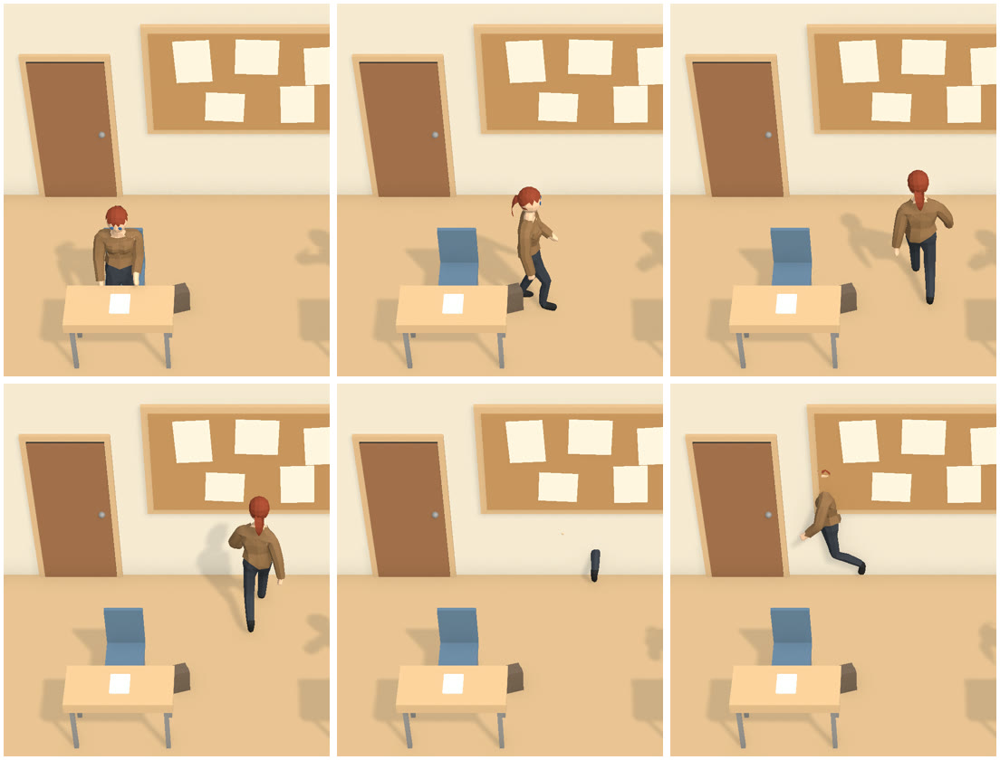
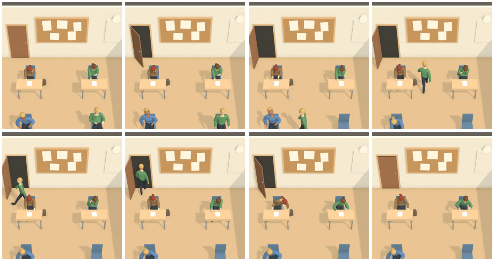
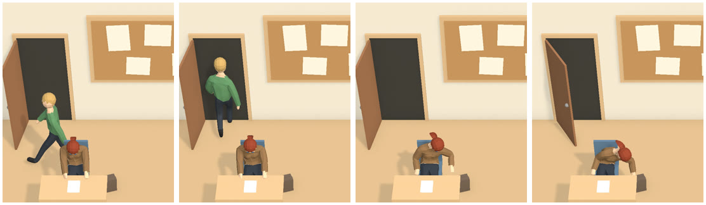
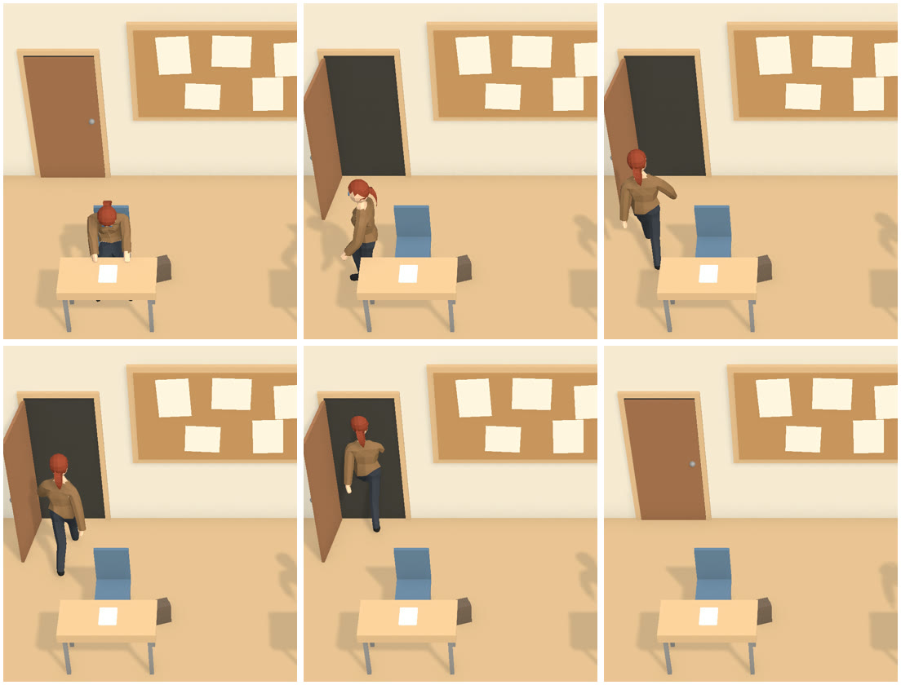

When the supervisor removes a student during the exam, the student stands up and walks out. The owner saw them walk inside the back wall to get to the door. Now they walk the aisle and the passage behind the back row, go through the door, which opens for them, and are gone. The door closes behind them. Captured in Play mode on the room camera at 1080×2340 portrait with six students. The rest of the screen is hidden to show the room.
Fixed. From every seat, with or without a bag, the body stays out of the walls, desks, chairs, bags and other students, and leaves only through the doorway. Removal itself is unchanged: the student is out the moment the supervisor decides, and cannot be tapped while they walk.
Up the aisle into the back wall, along the wall half inside it, then gone in front of a closed door.
Up the left of the aisle, along the passage behind the back row, through the doorway and out of sight.
It opens as they stand up and closes once they are gone. Admission's use of the door is unchanged.
The passage is 0.3 m behind the back-row chairs. From the camera, a student walking it passes just above the back-row heads. In plan they are 0.6 m apart.
The middle-right student, removed. Left to right, top to bottom: standing up, crossing to the aisle, walking up it, sunk into the back wall (only a foot and a shoulder show), walking along the wall inside it, and switched off at the closed door.


The same students, removed the same way.


